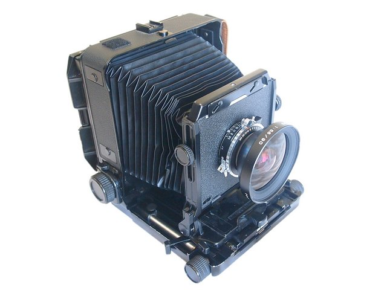

自我觀照的靈光－記在兩部相機的回顧之後
寫了兩篇有關手邊相機的使用回顧，但也許最重要的卻不只是相機，還有很多配合的條件，才能構築理想的攝影之路，所以又寫了這第三篇文章。你是為了什麼開始拍照的？我自己是這樣子的，以前經常騎著機車上山下海，在北部的山區裏其實隱藏著很多看似不起眼但又令人讚歎的小地方。

久而久之總會想要和朋友們分享自己眼中所看到的美麗景色，但因曾被斥為攝影白痴而遲遲不敢付諸行動，直到某次無聊在網路拍賣上買了一臺二手數位相機，在比較沒有壓力的情況下，開始步上攝影這條不歸路。
拍著拍著，幾年下來，在攝影這條路上不知不覺也愈走愈深，碰過的器材也比較多樣化了，當然和很多資深的前輩比起來還是不算什麼，但時間與心力的累積，多少也會有所成的，而有關器材與拍攝成果的關係，一直以來卻總是那麼糾結，常見到人言「相機前的鏡頭不重要，相機後的人頭才重要。」，但確實很多情形之下沒有好的器材就很難、甚至拍不到畫面，所以究竟孰重孰輕，始終各執一詞。

這篇文章大概沒辦法為兩種說法之間的爭議下定論，也不敢如此妄自尊大，而且我覺得這個問題可能還會一直爭議下去，不妨將這些文字當作一種另類的觀點來看，如果覺得有釐清了些什麼，這是一種很好的互動，如果覺得看不順眼，就請當小弟放了個屁吧，不要掛記在心。
首先，想談談拍了這幾年來自己所領悟出「攝影從心不從物」這句話，這大概是我個人在攝影路上的核心思想，亦即，我所關注的重點在於將心中所欲呈現的美感形式透過照片畫面表達出來，而器材和技巧乃是站在輔助的立場上來協助完成這個表達的，這樣說並沒有否定器材重要性的意思，人類學者曾針對藝術作品如何產出結果提出一個理論模型：【「生產工具」－「社會網絡」－「意識形態」】，這是一組交互關係的形式，可作為探討的架構，根據這個架構，我們可以理解拿來拍照的相機一定會對拍出來的作品有一定程度的影響，回顧攝影發展史，最初開啟攝影這個領域的大型相機和銀版感光技術，由於十分笨重且操作知識有門檻，所以多為專業人士在使用，拍出來的照片也受到很大的限制而以靜物為主；


後來柯達發明輕便可以手持的相機以及底片，攝影這種活動於是逐漸走入大眾，許多生活照和城市街拍的照片開始出現了；

70年代，高速閃燈的發明引起了一陣瞬時攝影的風潮，一些子彈穿過物體或水滴濺起的瞬間照片吸引了我們的目光；又，20世紀末數位相機的發展，讓拍照變得更輕鬆，攝影人口暴增，
數位檔案的創作之便讓許多奇幻式的影像變得可能，這些在在都說明了在大層面上器材對不同時期攝影作品潮流的影響。
再者，從上述的理論架構看來，個人所身處的社會網絡也會影響拍攝出來的東西，一名身處在商業網絡中的職業攝影師，基於和客戶的責任關係，拍出來的照片便須要考量或符合客戶的需求，而不能全憑自己的意志；相對來說，在大學裏人手一機的莘莘學子常喜歡天馬行空地自拍，只因人際網絡之中的同學們都在這麼做；又如喜歡攝影的父母在親子關係網絡中常愛拿孩子作照片的主角；而在某些前代的封建體系裏，拍照甚至只能是王公貴族的特權，一般人是沒什麼機會接觸到的。
至於在意識形態的影響上，簡單來說就是不同的世界觀對美感形式的制約與看法，不同的時代有不同的哲學思潮，在該時代底下的人都免不了受到這些哲學思潮所構成的基本美感形式所影響；歐洲中世紀受羅馬教會神學主宰控制，整個世界觀的核心思想是以上帝為中心，上帝是超越這個世界的存在，
當時的藝術品在功能上主要是為表彰上帝的榮耀，在表達的手法上常呈現一種平面的本體觀點，在教堂中壁畫上的宗教人物看來十分扁平，和一般視覺經驗有所不同，這種不同也恰恰好呈現了神和與人的世界是有差異的；
而在文藝復興之後，西方文明開始從中古世紀的以神為中心本位重新回到希臘羅馬時代的人為中心的世界觀，此時的透視畫技法開始應用，

藝術家的畫作和人眼所見的視覺經驗較為符合，藝術品不再只是表彰上帝的存在，同時也是人類觀看內外在世界的一扇窗。
(按：個人對藝術史涉獵有限僅就所知提出上述文字若有謬誤還請先進不吝指教)
那麼，說起來人類在攝影這件活動看似自主，但其實是受到種種的制約嚕？是的，這是人類生活的一種常態與現實，我們日常生活中的很多事情又有多少不是這樣子呢？然而人之所以和萬物不同，就在於具有自我反思的能力(其實這仍是在這個時代整體思維之下的一種概念)，一旦察覺了人所身處的這種條件性環境底下，在面對攝影這件事時更應該能靜下來沈思，在這個領域中的本我面貌是什麼，這個時代的人很幸福，人類哲學的思潮已經回到以人為本體的思想中心上，個人的思維與創意可以超脫現實世界以外充分地去發揮，而不必像古代一樣受到許多壓抑，雖然追求藝術上所謂純綷的美感應用的技巧還是免不了受到前述基本架構所影響，但能超越種種的限制才是自我突破的關鍵；我使用各種器材，但不希望被器材所束縛，雖然無法擺脫器材所帶來的極限，但我會盡力去善用器材所給的功能來協助表達我想表達的東西；我學習美學的知識，但不希望被它所限制，「構圖之巧妙」、「色彩之華麗」、「影像之銳利」、「層次之細緻」都不必然會形成觀者的美感經驗，我只求捕捉下來的畫面要先能感動我自己，接下來才有力量去感動別人。


你是為了什麼開始拍照的？

攝影有趣的地方，就在於可以深入專注也可以隨興，很多時候我也只是享受著按快門手指運動的快感。


但如果有那麼一點機會，可以讓我們捕捉下來美麗動人的畫面，也許就是藝術種子的萌芽，藝術總是比現實更能打動人心，而這不也是很多人拿起相機的初衷嗎？


==============================
與本文相關的兩篇
有興趣的同好不妨一併參考看看
老驥伏櫪，志在千里－2010年E-510使用回顧。
烈士壯年，雄心不已－2010年5D Mark II使用回顧。
回首頁 Back to Home 回攝影雜文目錄